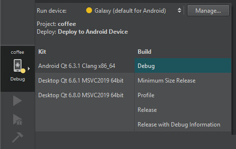

Build for many platforms
You can build applications for many target platforms, or using different compilers, debuggers or Qt versions. Kits define the tools, device type, and other settings to use.
By default, when you run the application, you automatically build and deploy it first. However, you can also perform each operation separately.
To check that the application code can be compiled and linked for a device, build the project. You can see build errors and warnings in Issues and more details in Compile Output.
Build an application
To build an application:
- Select the Build and Run Kit Selector icon or go to Build > Open Build and Run Kit Selector to select the build and run kit or an Android device.

- Select Build > Build Project or press Ctrl+B.
Or, select
 (Run) to deploy and run the application after building it.
(Run) to deploy and run the application after building it.
Cancel builds
While the application is being built, the (Build) button changes to a (Cancel Build) button. To cancel the build:
- Select .
- Press Alt+Backspace.
- Go to Build > Cancel Build.
If you selected a build command and now would also like to run the application, select the Run button to schedule running the project after building is done.
Build projects in several configurations
Go to Build to build, rebuild, and clean projects.
To build the current project in all its configurations, that is, for all build configurations in all enabled kits, select Build Project for All Configurations.
To build all open projects, select Build All Projects. If building one application fails, Qt Creator displays an error message and continues building the other applications.
To build all open projects in all their configurations, select Build All Projects for All Configurations.
Build files or subprojects
To quickly check the compile output for changes that you made in one file or subproject, use the Build menu commands to build it. The available build menu commands depend on the build system you selected for the project: CMake, qmake, or Qbs.
Select Build for Run Configuration to build the executable that corresponds to the selected run configuration. You can also use the cm filter in the locator.
Remove build artifacts
To remove all build artifacts, go to Build > Clean.
To clean the build directory and then build the project, select Rebuild.
To build and clean projects without dependencies, select the Build Without Dependencies, Rebuild Without Dependencies, and Clean Without Dependencies options in the context menu in the Projects view.
See also Configure projects for building, How To: Build and Run, Adding Docker Devices, and Specifying Build Settings.